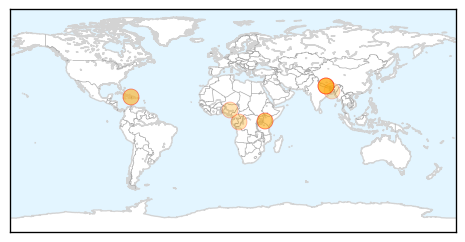
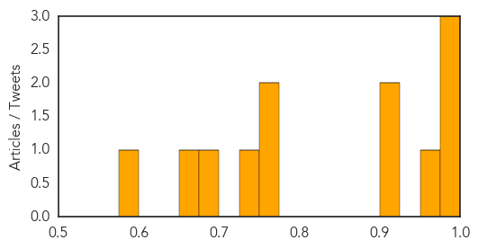
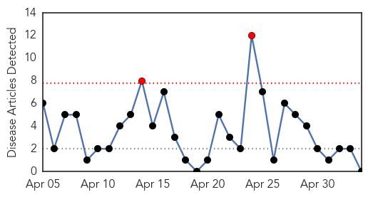

Cholera
30-Day Web Trend
0 alerts, 0 warnings
30-Day Twitter Trend
0 alerts, 0 warnings
Article Locations
Article Confidences
Top Articles:
- 0.999
- More than 30 patients from slums admitted with cholera in Nairobi - Kenya
- 0.986
- Three die after cholera outbreak in Murang’a and Kirinyaga counties - Kenya
- 0.981
- Monsoons could bring disease, a second crisis, to Nepal, UNICEF says
- 0.969
- Cholera, measles outbreak hit Kasese
- 0.908
- 5 more dead, others hospitalized in Ebonyi cholera outbreak
- 0.903
- People wear masks in quake-jolted Nepal amid growing fear of epidemic
- 0.759
- Now fear of epidemic looms in Nepal
- 0.753
- Now fear of epidemic looms in Nepal
- 0.749
- Now fear of epidemic looms in Nepal
- 0.699
- Three women and a 101-year-old man rescued from Nepal earthquake rubble eight days later
- 0.656
- Nepal Earthquake Death Toll Tops 7,000, Aid Delayed
- 0.577
- The Latest on Nepal: Diarrhea fears in worst-hit quake areas
Top Tweets:
- 0.604
- Cholera in Kenya 63 cases w 10 deaths https://t.co/RGMHLhIXBj
Hepatitis
30-Day Web Trend
2 alerts, 0 warnings

30-Day Twitter Trend
0 alerts, 0 warnings

Article Locations

Article Confidences

Top Articles:
-
No articles found for May 04, 2015
Top Tweets:
-
No tweets found for May 04, 2015